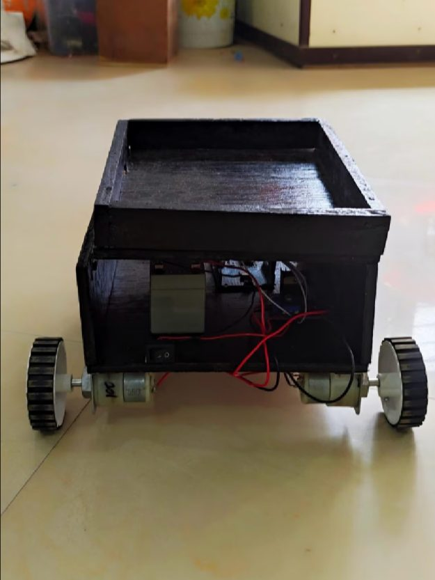
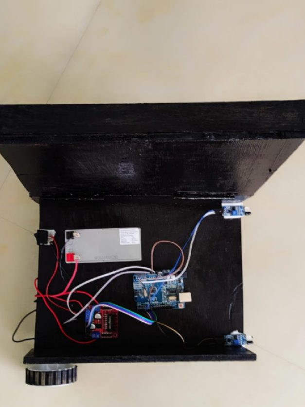
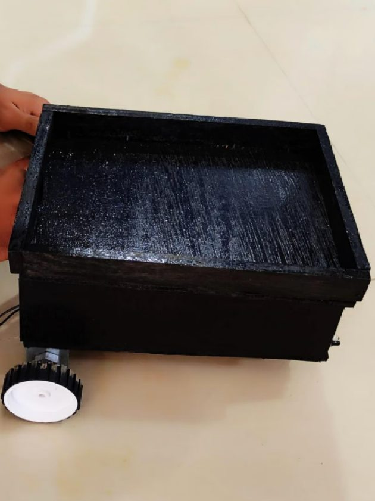

← All work
Human Following Robot
A hardware prototype that follows a person around a room, reading IR sensors and steering its motors in real time.
The idea
A small robot that follows human movement using IR sensors. An Arduino reads the sensors and decides what to do, and a motor driver turns those decisions into speed and steering.
What it does
- Real-time input processing on an Arduino.
- IR sensors detect how close a person is and in which direction.
- A motor driver controls speed and turning.
- A rear caster wheel for smooth rotation.
- Built for indoor floors.
- Simple, efficient prototype logic.
Hardware
- Arduino UNO
- IR sensors
- L298N motor driver
- DC gear motors
- 12V battery
- Chassis and caster wheel
How it works
The IR sensors detect a person or an obstacle ahead. Based on their signals, the Arduino tells the motor driver to move forward, stop or turn, so the robot responds straight away to where the person is. A rear caster wheel keeps the turns smooth.
Prototype



What I learned
- Arduino programming and real-time decisions.
- Motor control with the L298N driver.
- Sensor-based robotics and obstacle logic.
- Hands-on hardware integration and wiring.
- Designing prototypes that work in the real world.